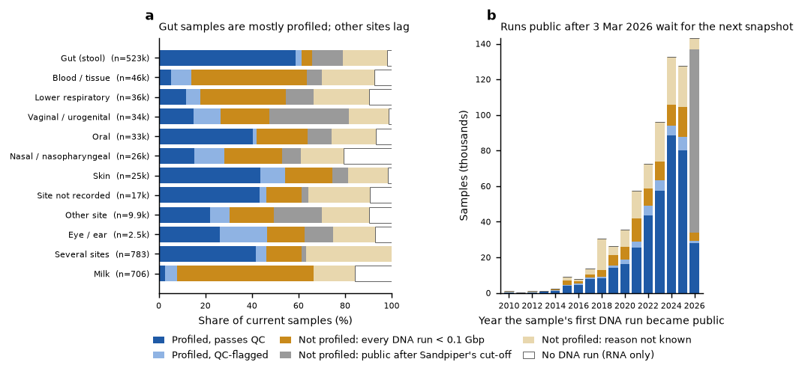
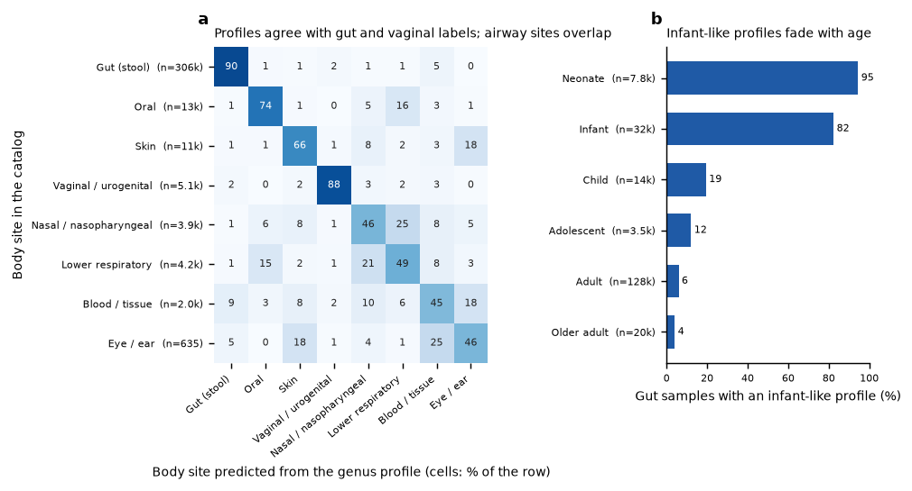
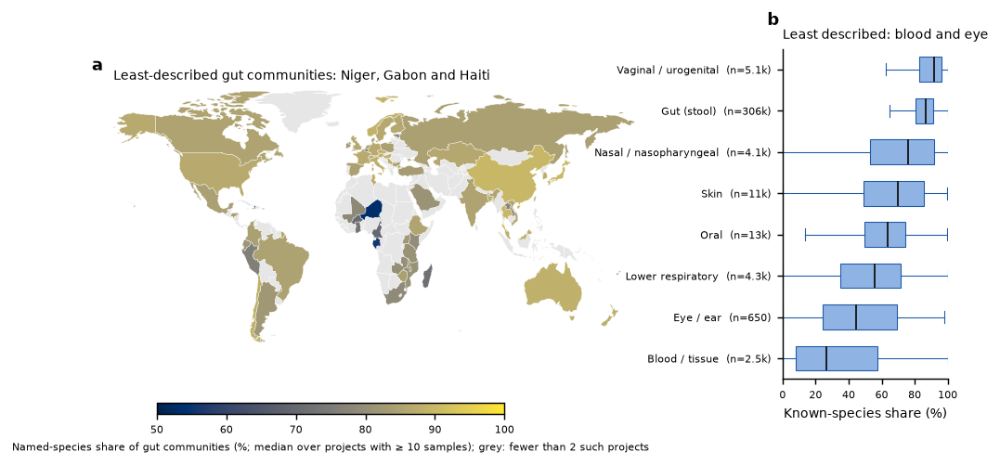
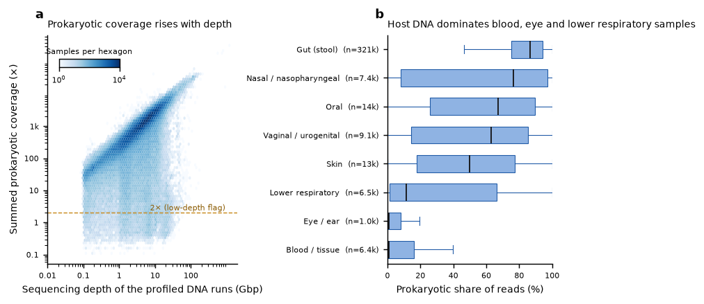

Profile measures
Four measures on the join between catalog samples and their Sandpiper community profiles (SingleM, GTDB taxonomy; Sandpiper 2.0.1, Zenodo record 21287531), recomputed with every release. Package 1.30.0 (R2026.36). Counts use current samples only. QC-flagged profiles are left out of measures 2 and 3. Every table is downloadable in full as CSV.
1. Profiling coverage · 2. Labels versus composition · 3. Known versus unknown community · 4. Depth and quality
1. Profiling coverage
416,336 of 806,054 current samples (51.7 %) have a Sandpiper profile. Sandpiper screened archive metagenomes public up to 2026-03-03; runs made public later wait for its next snapshot. Below 0.1 Gbp per run it profiles almost nothing. Above 1 Gbp it profiles about four in five runs; 90,349 DNA runs of at least 1 Gbp, public before the cut-off, have no profile yet (list).
| Status of the sample | Samples | Share |
|---|---|---|
| Profiled, passes QC | 380,505 | 47.2 % |
| Profiled, QC-flagged | 35,831 | 4.4 % |
| Not profiled: every DNA run < 0.1 Gbp | 98,189 | 12.2 % |
| Not profiled: public after Sandpiper's cut-off | 102,795 | 12.8 % |
| Not profiled: reason not known | 159,065 | 19.7 % |
| No DNA run (RNA only) | 29,669 | 3.7 % |

Largest unprofiled projects
| Project | Unprofiled | Samples | Runs < 0.1 Gbp | After cut-off | Not known | No DNA run | Title |
|---|---|---|---|---|---|---|---|
| PRJNA400115 | 12266 | 12266 | 1 | 0 | 12265 | 0 | TEDDY Microbiome |
| PRJNA1460779 | 10003 | 10003 | 0 | 10003 | 0 | 0 | The Vaginal Microbiome as a Reservoir for Uropathogens: A Population-Scale Metagenomic Study of Women Recently Experiencing BV & UTI |
| PRJNA416160 | 8747 | 8747 | 6723 | 0 | 2024 | 0 | The Environmental Determinants of Diabetes in the Young (TEDDY) Parent Study |
| PRJEB11419 | 6462 | 7353 | 3007 | 1005 | 2450 | 0 | American Gut Project |
| PRJNA1468137 | 4749 | 4749 | 0 | 4749 | 0 | 0 | Maternal influences on infant gut microbiome and health |
| PRJEB23147 | 4530 | 4737 | 3196 | 0 | 1334 | 0 | Human_colon_16S |
| PRJEB32762 | 3756 | 3765 | 805 | 0 | 2951 | 0 | iMSMS Baranzini data |
| PRJEB60398 | 3481 | 3564 | 156 | 0 | 3325 | 0 | Data-driven prediction of colonization outcomes for complex microbial communities |
| PRJEB60095 | 2860 | 2860 | 3 | 0 | 2857 | 0 | Cardamom |
| PRJEB70237 | 2664 | 2664 | 0 | 0 | 2664 | 0 | HELMi infant and parental stool WGS metagenomes |
| PRJEB97686 | 2631 | 2631 | 0 | 2631 | 0 | 0 | BMT CTN 1801 microbiome data |
| PRJEB110772 | 2398 | 2398 | 0 | 2398 | 0 | 0 | Gut microbiota associates with frailty in older women |
| PRJEB80544 | 2386 | 2386 | 17 | 0 | 2369 | 0 | Fecal metagenomes to predict incident cancers in a screening population (FOCUS cohort) |
| PRJNA799247 | 2210 | 4142 | 0 | 0 | 239 | 1971 | Metagenomics of preterm infant stool |
| PRJNA48479 | 2096 | 2096 | 19 | 0 | 2077 | 0 | Human Microbiome Project (HMP) Metagenomic WGS Projects, deeper sequencing of the human microbiome samples: Production Phase |
| PRJEB98467 | 2071 | 2071 | 0 | 2071 | 0 | 0 | Whole shotgun metagenomic sequencing for 1,679 individuals (2,075 samples) from the TwinsUK cohort. Supporting data for: Pope et al, Faecal metabolites as a readout of habitual diet capture dietary interactions with the gut microbiome. |
| PRJEB91658 | 1970 | 1970 | 0 | 1970 | 0 | 0 | COLO-COHORT: Exploring Gut Microbiome Associations of Colorectal Health and Early Colorectal Cancer Detection |
| PRJNA1084017 | 1849 | 1876 | 1107 | 0 | 742 | 0 | Laboratory validation of a respiratory metagenomic sequencing assay |
| PRJEB100670 | 1825 | 1826 | 0 | 1825 | 0 | 0 | The gut microbiota in pre-diabetes and type-2 diabetes |
| PRJEB115010 | 1792 | 1792 | 0 | 1792 | 0 | 0 | NCRAD ADRC Samples - Aug 2022, Aug 2023 (Native American samples removed) |
| PRJEB37731 | 1727 | 2825 | 211 | 318 | 1198 | 0 | Effects of the menstrual cycle and hormonal contraceptives on the human microbiome |
| PRJNA398089 | 1582 | 2803 | 274 | 0 | 546 | 762 | Longitudinal Multi’omics of the Human Microbiome in Inflammatory Bowel Disease |
| PRJNA1454017 | 1558 | 1558 | 1558 | 0 | 0 | 0 | Gut metagenomes of persons with Parkinson disease and neurologically healthy elderly controls. |
| PRJEB108450 | 1525 | 4102 | 358 | 480 | 687 | 0 | Exploring Fecal Microbiome in the CHILD COVID-19 sub-project |
| PRJEB40903 | 1505 | 1549 | 959 | 0 | 546 | 0 | DNA extraction comparison testing 2019-2020 |
Full tables: every project · by body site · by year · by country.
2. Labels versus composition
The catalog's body site agrees with the site predicted from the genus profile for 87.2 % of 346,092 labelled, QC-clean samples (63.0 % averaged over sites). The classifier is a multinomial logistic regression on centred log-ratio genus abundances (the 388 genera of the PCA). Each project's samples are scored by a model that never saw that project: five folds, split by project, with at most 150 training samples per project and site. On gut samples, a second model separates infants (exact age under 1 year) from adults (18 years or older). It agrees with exact ages for 92.5 % of 73,276 samples.
A disagreement is a reason to look at a sample, not a correction. Nasal, lower-airway and oral communities overlap. Blood, tissue and eye samples are low-biomass and carry little microbial signal. Older infants already have adult-like communities. Confidently discordant samples (probability ≥ 0.9): 8,804 with another body site's profile, and 2,854 adult or older-adult gut samples with an infant-like profile. They are queued for a reading check before anything changes.

Projects with the most discordant samples
| Project | Other-site profile | Adult with infant-like profile | QC-clean profiled | Share | Most common suggestion | Title |
|---|---|---|---|---|---|---|
| PRJEB45799 | 1441 | 1141 | 2168 | 1.19 | oral | The person-to-person transmission landscape of the gut and oral microbiomes |
| PRJNA915128 | 43 | 0 | 44 | 0.98 | gut_stool | Vaginal microbiota of pregnant women with IBD |
| PRJNA553191 | 56 | 0 | 59 | 0.95 | gut_stool | Shotgun metagenomics of human gut microbiota up to extreme longevity and the increasing role of xenobiotics degradation |
| PRJNA928311 | 0 | 42 | 51 | 0.82 | infant-like | Probiotics supplementation to ileostoma bacterial community cause dynamic increase in their resistance to perturbations and metabolic utilization |
| PRJEB74248 | 28 | 0 | 46 | 0.61 | gut_stool | The OSM and Tear Proteome in Glaucoma Patients |
| PRJNA983093 | 2 | 97 | 177 | 0.56 | infant-like | Bifidobacterium lactis Probio-M8 treated and prevented acute RTI via regulating gut microbiota and metabolites. |
| PRJNA1099236 | 104 | 11 | 209 | 0.55 | vaginal_urogenital | Gut Microbiome and Pregnancy Complications |
| PRJNA862314 | 27 | 2 | 55 | 0.53 | nasal_nasopharyngeal | A One Health analysis of potential viral sharing between humans and great apes |
| PRJNA810436 | 24 | 0 | 46 | 0.52 | oral | An international report on bacterial communities in esophageal squamous cell carcinoma |
| PRJNA1173329 | 24 | 0 | 49 | 0.49 | gut_stool | Mechanistic Study of Head and Neck Squamous Cell Carcinoma Based on Microbiomics |
| PRJNA898682 | 22 | 41 | 131 | 0.48 | infant-like | Study of gut virome in allogeneic hematopoietic stem cell transplantation |
| PRJNA1148144 | 1 | 42 | 109 | 0.39 | infant-like | Biosignatures of late-onset extraintestinal bacterial infections |
| PRJNA1004560 | 29 | 0 | 83 | 0.35 | blood_tissue | The colonic virome in inflammatory bowel disease |
| PRJNA891875 | 31 | 9 | 118 | 0.34 | blood_tissue | Human gut Metagenome |
| PRJNA530252 | 48 | 0 | 145 | 0.33 | respiratory_lower | Effect of cycled, inhaled tobramycin on the sputum microbiome in cystic fibrosis |
| PRJNA637365 | 2 | 23 | 87 | 0.29 | infant-like | Dysbiosis in metabolic genes of the gut microbiomes of patients with a Pouch |
| PRJNA531921 | 15 | 5 | 71 | 0.28 | vaginal_urogenital | Human Gut Metagenome Raw sequence reads |
| PRJNA835720 | 36 | 1 | 139 | 0.27 | blood_tissue | Human feces Viral/Bacterial Metagenome |
| PRJEB6921 | 34 | 0 | 139 | 0.24 | blood_tissue | Role_of_early_life_gut_microbiota_in_colonisation_resistance_development |
| PRJNA723467 | 22 | 0 | 96 | 0.23 | vaginal_urogenital | Gut virome in obese and healthy minors |
| PRJNA1067625 | 24 | 3 | 120 | 0.23 | vaginal_urogenital | Gut microbiome of children in Haiti |
| PRJNA1005411 | 33 | 0 | 154 | 0.21 | respiratory_lower | Viral metagenomic sequencing raw data of Chinese human gut |
| PRJNA524170 | 9 | 12 | 99 | 0.21 | infant-like | Resistant microbiome underlies antibiotic therapy in pouchitis |
| PRJNA745329 | 32 | 6 | 197 | 0.19 | blood_tissue | Fecal and colon mucosa sequencing of tubular adenoma, serrated, and polyp-free individuals |
| PRJDB18646 | 23 | 0 | 121 | 0.19 | blood_tissue | The Virome analysis in Japanese healthy cohort and patients with HIV or SARS-CoV-2 infection |
| PRJEB58436 | 36 | 39 | 398 | 0.19 | infant-like | Obesity, and not cardiometabolic health status, drives altered gut microbiome functions in the metabolically unhealthy |
| PRJEB66493 | 7 | 14 | 112 | 0.19 | infant-like | A Randomised Placebo-Controlled Trial of Faecal Microbiota Transplantation in Patients with Chronic Pouchitis – MicroPouch study |
| PRJNA984221 | 49 | 0 | 275 | 0.18 | respiratory_lower | Fecal microbiota transplant in ulcerative colitis patients: what is the role of the human gut virome and can it be used as a biomarker for predicting treatment success |
| PRJNA993161 | 5 | 42 | 274 | 0.17 | infant-like | Impact of complex oligosaccharides and a probiotic on the antibiotic-treated human microbiome |
| PRJNA1402308 | 20 | 8 | 164 | 0.17 | vaginal_urogenital | BALANCE gut microbiome |
106 projects with at least 20 discordant samples. Full tables: projects · samples · confusion matrix · site suggested for 5,673 samples without a recorded site (suggestions only; not entered in the catalog).
3. Known versus unknown community
Known-species share is the share of a sample's prokaryotic coverage assigned to a named GTDB species. It shows where reference genomes still miss much of the community, and it rises as GTDB and GlobDB grow. Gut samples from Niger (53 %), Gabon (56 %), Haiti (64 %) have the least-described communities. The 10 countries with the most gut samples (led by United States, China, United Kingdom) sit between 85 and 90 %.

| Body site | Samples | Median known-species share |
|---|---|---|
| Vaginal / urogenital | 5,120 | 91.8 % |
| Gut (stool) | 306,474 | 86.7 % |
| Nasal / nasopharyngeal | 4,052 | 76.1 % |
| Skin | 10,697 | 69.7 % |
| Oral | 13,329 | 63.8 % |
| Lower respiratory | 4,269 | 55.6 % |
| Eye / ear | 650 | 44.4 % |
| Blood / tissue | 2,462 | 26.8 % |
Full tables: gut samples by country · by body site · gut samples by lifestyle.
4. Depth and quality
98.5 % of 415,957 profiled samples clear Sandpiper's low-depth line (2× summed prokaryotic coverage). Coverage follows sequencing depth (Spearman ρ = 0.821; median 4.32 Gbp and 982× per sample). It falls well below the line where host DNA dominates: the median prokaryotic share of reads is 0.8 % in blood / tissue samples and 1.1 % in eye / ear samples, against 86 % in gut (stool). QC-flag rates across all profiled samples: low depth 1.5 %, low complexity 5.9 %, non-metagenome organism label 0.9 %, any flag 16.0 %.

Projects with the highest QC-flag rates (at least 50 profiled samples)
| Project | Profiled | Median Gbp | Median coverage (×) | Low depth | Low complexity | Any flag | Title |
|---|---|---|---|---|---|---|---|
| PRJNA876774 | 53 | 4.971 | 1241.34 | 0.00 | 0.00 | 1.00 | Impact of varied stressful environmental conditions on human gut microbiota |
| PRJEB95138 | 273 | 6.118 | 1775.1 | 0.00 | 0.00 | 1.00 | Glucocorticoid-induced changes of the gut microbiota |
| PRJNA913982 | 61 | 7.206 | 1892.7 | 0.00 | 0.00 | 1.00 | probiotics-induced remission of functional constipation |
| PRJEB44233 | 68 | 8.107 | 2410.945 | 0.00 | 0.00 | 1.00 | Association between age and the human intestinal microbiome |
| PRJNA666535 | 118 | 1.593 | 87.385 | 0.03 | 0.34 | 1.00 | Blood Virosphere in Febrile Tanzanian Children |
| PRJEB47976 | 156 | 5.151 | 1488.62 | 0.00 | 0.00 | 1.00 | Alzheimer signature in intestinal microbiome: Results from the AlzBiom study. |
| PRJNA883997 | 52 | 0.239 | 98.465 | 0.00 | 0.02 | 1.00 | In Vivo Cluster AI Prediction (CLAIRE) of COVID-19 Disease Progression |
| PRJEB52938 | 458 | 1.167 | 284.63 | 0.00 | 0.14 | 1.00 | Longitudinal stool metagenomics from preterm infants within the first month after birth |
| PRJNA615628 | 56 | 1.505 | 684.61 | 0.00 | 0.00 | 1.00 | Cystic fibrosis airway respiratory microbiome Raw sequence reads |
| PRJNA475246 | 228 | 3.693 | 688.775 | 0.01 | 0.04 | 1.00 | Strain-level identification of mother-to-child bacterial transmission during the first few months of life |
| PRJEB54606 | 172 | 2.478 | 534.96 | 0.01 | 0.00 | 1.00 | The fecal and mucosa adherent microbiome depends on age and disease severity in both composition and functional properties in ulcerative colitis |
| PRJEB77729 | 94 | 6.049 | 1960.655 | 0.03 | 0.10 | 1.00 | First-Year Dynamics of the Microbiome in Infants’ Oral and Gastrointestinal Systems |
| PRJNA1067975 | 93 | 11.084 | 2775.97 | 0.00 | 0.00 | 1.00 | Clostridioides difficile infection |
| PRJEB47902 | 93 | 7.007 | 2155.74 | 0.00 | 0.00 | 1.00 | BARIA baseline first 100 individuals, metagenomes |
| PRJNA1236664 | 174 | 2.843 | 864.23 | 0.00 | 0.00 | 1.00 | Intestinal dysbiosis promotes gut permeability and neurological sequelae in individuals with long COVID via gut microbiota-derived extracellular vesicles |
| PRJNA804384 | 385 | 3.501 | 83.85 | 0.04 | 0.05 | 1.00 | Inflammatory bowel disease patients undergoing biological therapy |
| PRJNA793776 | 119 | 8.665 | 2271.86 | 0.00 | 0.00 | 1.00 | Homo sapiens Raw sequence reads |
| PRJEB74248 | 56 | 15.882 | 2718.64 | 0.00 | 0.11 | 1.00 | The OSM and Tear Proteome in Glaucoma Patients |
| PRJNA1088844 | 266 | 1.846 | 534.505 | 0.00 | 0.00 | 1.00 | Characterization of the fecal microbial taxonomic composition and functional potential and integrative analysis with gastrointestinal and non-gastrointestinal symptoms in subjects with disorders of gut-brain interactions |
| PRJNA1464738 | 74 | 5.602 | 1424.825 | 0.00 | 0.23 | 1.00 | Metabiosis underlies a microbiota permissive to Pseudomonadota and increases the risk of gut-borne bloodstream infection |
| PRJEB73820 | 59 | 6.024 | 1581.24 | 0.00 | 0.00 | 1.00 | Microbiome in pediatric obesity |
| PRJNA678472 | 93 | 1.059 | 164.09 | 0.00 | 0.96 | 1.00 | Long-term persistence of crAss-like phage crAss001 in Bacteroides intestinalis cultures in vitro and in vivo |
| PRJNA1210837 | 92 | 6.891 | 2112.785 | 0.00 | 0.01 | 1.00 | Metagenomic sequencing of gut virus in heart failure patients |
| PRJNA842783 | 107 | 3.168 | 2.5 | 0.38 | 0.63 | 1.00 | Detection of pathogen with mNGS |
| PRJEB38984 | 353 | 4.512 | 1372.34 | 0.00 | 0.00 | 1.00 | Longitudinal profiling of non-disease individuals. Microbiota data. |
Full table for every project: depth_qc_projects.csv.